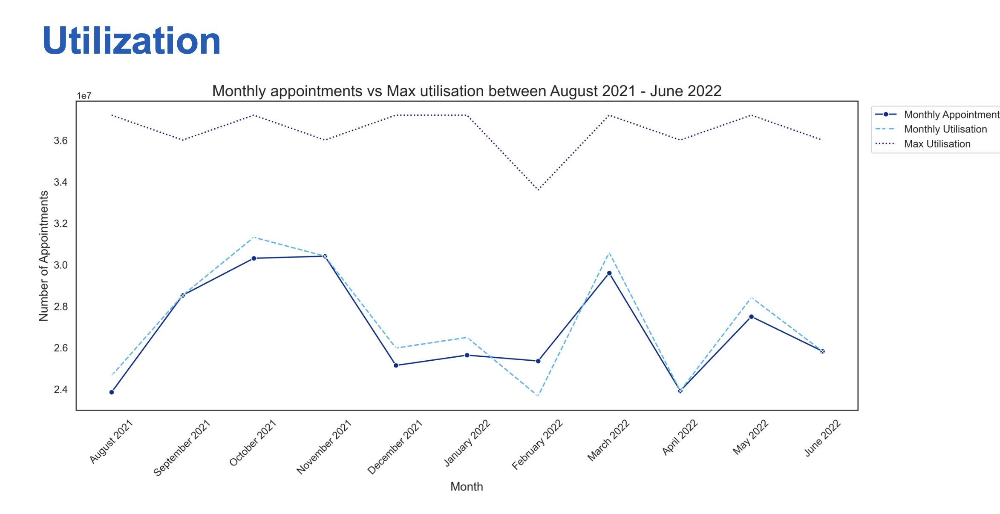
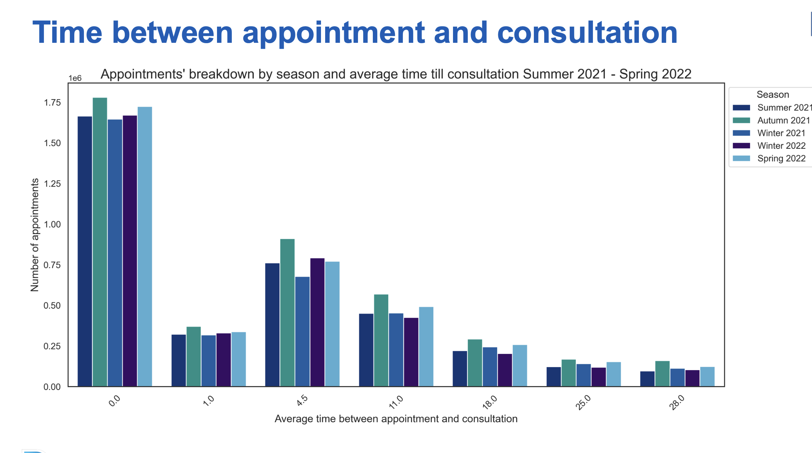

Healthcare Operations
Improving efficiency and insights for the UK's NHS using Python
86%
Grade
Distinction
Merit
Overview
The NHS is concerned about the adequacy of its current staff and
the capacity of its network in the face of a growing and aging
population.
It is also faced by a significant financial burden resulting from no-
show (DNA/ Did not attend) appointments.
This project analyzed NHS operations to uncover efficiency insights, seasonal and regional trends,
network utilization, and response during crises (pandemic effect). Data analysis was done using Python.
Deliverables
- üìÑ Final Report (PDF)
- üìä Presentation Deck
- üíª Healthcare Walkthrough Notebook: ‚öôÔ∏è Run in Colab | ‚¨áÔ∏è Download (ZIP)
Key Insights
- NHS should keep up with its appointment reminder strategies as they have had a very positive impact on their reduction.
- NHS should focus its new hires on primary care network and extended access services to flexibly meet the local needs and the expected increase in the number of appointments.
- It should also focus on staff hiring for the elderly services and care homes as by 2030 more than 25% of the population would be 60 and above.
- Instead of working with 75% FTE staff, the NHS should aim to increase this percentage by 2030 to meet the demanding nature of an aging population.
Visuals

